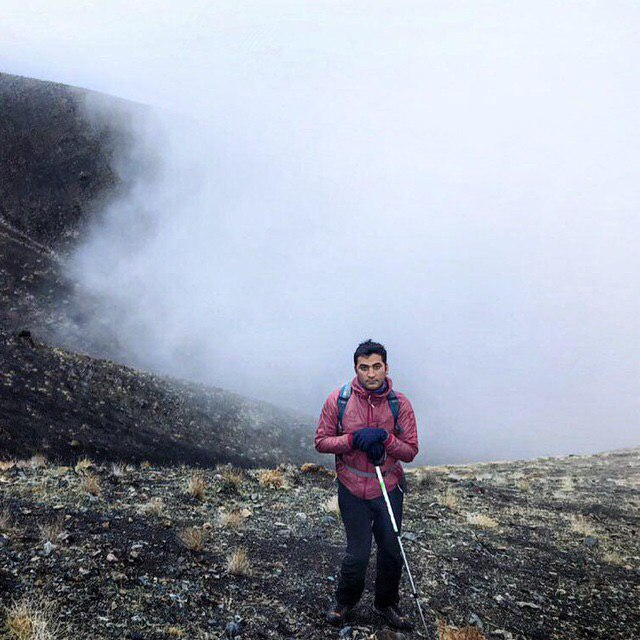
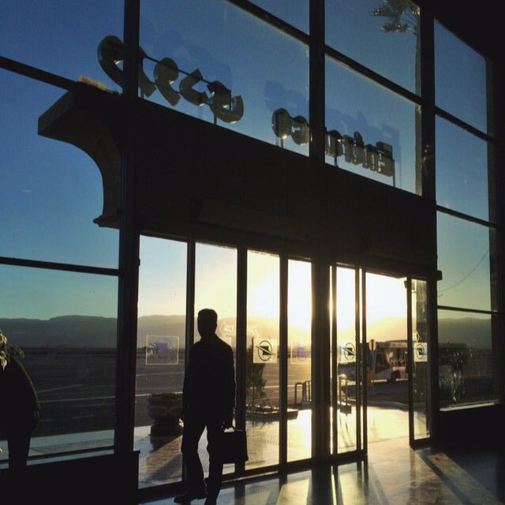

"Nishapur Travel Notes"

Nishapur or officially Romanized as Neyshabur is the second largest city of Razavi Khorasan
Province,
the historic capital of the western half of Greater ...
Continue Reading →
"Tehran Travel Notes"
With a population of around 8.7 million in the city and 15 million in the larger metropolitan area
of
Greater Tehran, Tehran is the most populous city in Iran ...
Continue Reading →
"Shiraz Travel Notes"

Shiraz is the fifth-most-populous city of Iran and the capital of its Fars Province, which has been
historically known as Pars (پارس, Pārs) and Persis.
Continue Reading →